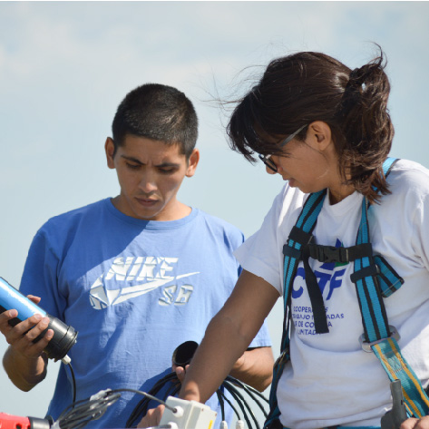

IoT aplicado al agro
Nos unimos con Cooperativa de trabajo IT10 y Consultora del Sur e implementamos tecnología IoT para crear una plataforma que posibilite el conocimiento de la profundidad de la napa freática en tiempo real.
Nuestro equipo, en conjunto con IT10 cooperativa, planifica la disposición y ubicación geográfica de nodos de sensado, sensores de profundidad y gateway, evaluando las condiciones ambientales, climáticas y del sitio donde se instalarán.
Nuestro desarrollo tiene como fin eficientizar el proceso de producción en el sector agropecuario.
Freomap se transforma en una solución inteligente diseñada, con adaptación a los cambios climáticos y pensada especialmente para uso agropecuario.
